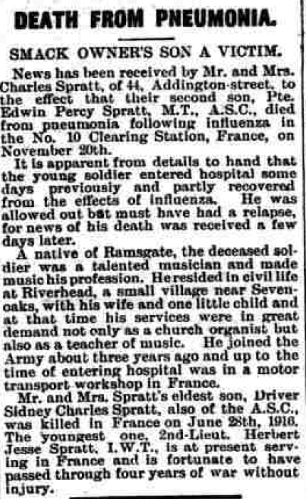

Edwin Percy Spratt cMay 1891 - 1918
[ Home ] | [ Calendar ] | [ Surnames Index ] | [ Errors ] | [ Family History ]A musician and the child of Charles Spratt (a smack owner and fish salesman) and Susannah Thunder, Edwin Spratt, the first cousin twice-removed on the father's side of Nigel Horne, was born in Ramsgate, Kent, England c. May 18911,2, was baptised in Herne, Kent, England on 24 May 1891. He married Ethel Brandel (with whom he had 1 surviving child, ) at Registry Office, Sevenoaks, Kent, England on 20 Nov 19124.
During his life, he was living at 44 Addington Street in Ramsgate on 31 Mar 19015 and on 2 Apr 19117; and at 2 The Parade, Riverhead in Sevenoaks in 1915. He served in the army from 1915 to 1918 in France (soldier Number: DM2/129650, Rank: Private, Corps: Army Service Corps).
He died on 19 Nov 1918 in France2,3 (pneumonia. Memorial details: www.iwm.org.uk) and was buried at Tourcoing Communal Cemetery, Tourcoing, Hauts-de-France, France after 19 Nov 1918.
Parents
- Charles was born c. May 1854
- Susannah was born in 1851
Citations
- England & Wales births 1837-2006 - Findmypast
- Lives Of The First World War 1914-1918 - Findmypast
- Commonwealth War Graves Commission Debt Of Honour - Findmypast
- England & Wales Marriages 1837-2005 - Findmypast
- 1901 England, Wales & Scotland Census - Findmypast
- 1901 England, Wales & Scotland Census - Findmypast (was age 9 and the son of the head of the household)
- 1911 Census for England & Wales - Findmypast (was age 19 and the son of the head of the household)
Media
Thanet Advertiser 30 Nov 1918

UK, WWI Service Medal and Award Rolls, 1914-1920
Edwin Percy Spratt - Military Record
1901 England, Wales & Scotland Census - GBC/1901/0007443349
1911 Census for England & Wales - GBC/1911/RG14/04516/0043/3
England & Wales births 1837-2006 - BMD/B/1891/2/AZ/000571/228
England & Wales marriages 1837-2008 - BMD/M/1912/4/AZ/000949/148
British Army Service Records 1914-1920 Transcription - GBM-WO363-4-7329419-8-122
Canterbury Baptisms Transcription - GBPRS-CANT-B-96129273
GRO WAR DEATHS ARMY OTHER RANKS (1914 to1921) Transcription - BMD-OVS-ARR1-003436-150
Medal Index Cards Transcription - GBM-MCI-4217018
Commonwealth War Graves Commission Debt Of Honour - GBM/CWGC/ROLLOFHONOUR/000906671
Lives of the First World War 1914-1918 - GBM/LIVES/4212971
England Births & Baptisms 1538-1975 - R_884935503
Family Tree

Map
Generated by ged2site. Last updated on Jul 3, 2024
Known Issues
Parent Charles is listed in the residence for 1899, but this child is not
Burial place (Tourcoing, Hauts-de-France, France) has no citations
Residence record for 1915 contains no citation
Listed in the residence for 1915, but spouse Ethel Brandel is not
Adding date of burial as 'aft 19 Nov 1918'
www.iwm.org.uk in notes is not found